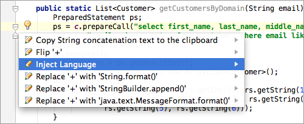
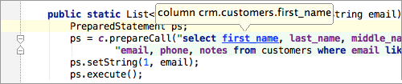

Use intention Inject Language &shortcut:ShowIntentionActions; on String literal in Java class to get code assistance for SQL queries.

IntelliJ IDEA will provide syntax highlighting, smart completion, navigation and on-the-fly code analysis for your queries.
